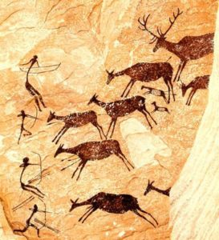
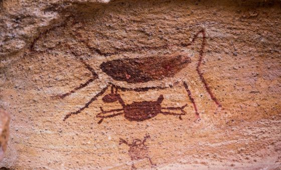

Publicado em 22 de outubro de 2018 por Maria Fernanda Baveloni e Talita Camargo

O termo Bem-Estar é, genericamente, designado para indicar a qualidade a vida de um animal. Se ele tem boa saúde, se suas condições físicas e comportamentais estão adequadas e se ele pode expressar seu comportamento natural.
Donald Broom, um dos pioneiros nas pesquisas referentes à bem-estar animal, definiu que essa é uma característica inerente aos animais, ou seja, não pode ser dada a eles pelo homem. Sendo assim, a expressão “Bem-Estar” funciona como uma palavra substantivada, o que torna correto qualificá-la como adequada, quando fornecemos mecanismos para que os animais a desenvolva, ou inadequada, quando não lhes são fornecidos esses mecanismos.
Desde os primórdios, o homem sempre esteve em estreita conexão com a natureza, da qual extraía seus meios de subsistência e sobrevivência. Dentro desse contexto, os animais sempre foram parte integrante do ambiente que os rodeava, o que é possível demonstrar através das primeiras expressões artísticas observadas nas paredes das cavernas: as pinturas rupestres. Ao longo do tempo, essa relação homem-animal foi se modificando até chegar na interação que observamos hoje e, para isso, passamos por períodos históricos que caracterizam essa aproximação gradativa:
-Homem nômade;
-Saía em busca de alimento (caça);
-A primeira domesticação foi a do cão para ajudar na caça.
-Sedentarismo;
-Agricultura de subsistência;
-Início da estruturação social;
Animais tais como cão, dromedário, cabra, boi, entre outros, começaram a ser domesticados com finalidade de força de trabalho, transporte e/ou para matéria-prima e alimento.
A partir desse período, tem início a dinâmica do comércio e do dinheiro, representado por sementes, que facilitavam a troca de mercadorias.
É notável, através dos estudos arqueológicos, que diversas mudanças marcaram a vida do homem em sociedade e a sua consequente relação com os animais.
Com o passar dos anos e com o desenvolvimento da capacidade cognitiva e inteligência humana, os nossos ancestrais começaram a desenvolver instrumentos para auxiliar nessas disputas, o que permitiu que se sobressaíssem em relação aos animais e passassem a dominá-los.
No Período Paleolítico não existia, ainda, a divisão social e o homem não tinha habitação fixa e vivia em busca de lugares com maior oferta de alimentos. A única domesticação existente em dado momento era a utilização de um animal com características fisiológicas semelhantes à de um cão, para auxiliar na caça.
Esse cenário mudou a partir da descoberta do fogo, marco da transição entre o Período Paleolítico (Pedra Polida) e o Período Neolítico (Pedra Lascada). Com o auxílio do fogo, os homens pré-históricos conseguiam se proteger dos predadores, mas, para isso, havia a necessidade de se estabelecer em uma habitação fixa, processo que culminou com os primórdios da agricultura. Esse avanço se deu quando perceberam que as sementes das frutas que comiam lançadas na terra germinavam dando novos frutos.
Dessa forma, a sociedade primitiva começou a se desenvolver, as tarefas passaram a ser divididas entre os homens, que saiam para a caça e, as mulheres, que cuidavam das plantações. Essas plantações acabavam por atrair animais que se aproximavam das tribos para se alimentar dos cultivos ali semeados, o que facilitou a apreensão dos animais para domesticá-los ou abaterem. Além disso, surgiu a moeda de troca que era representada pelas sementes e a preocupação com a disponibilidade de alimentos na época de escassez. Esses fatores motivaram a construção de armadilhas que culminaram nas primeiras interações do homem com o animal por questões econômicas, sobrevivência ambiental e aproveitamento da força motriz.
Por milhares de anos os animais foram utilizados sem nenhuma preocupação com seu bem-estar, pois acreditavam que eles não possuíam senciência. A senciência pode ser entendida como o nível mais básico de consciência, ou seja, é a capacidade de sentir, conscientemente, as sensações mais básicas. Dentro desse contexto, grandes filósofos se destacaram:
René Descartes (1596-1650): os animais seriam como “máquinas sem alma”.
Jeremy Bentham (1748-1832): defendeu que devemos tratar os animais como um ser que não é dotado de razão ou linguagem, mas considerando sua capacidade de sofrer.
Charles Darwin (1809-1882): defendeu que a atividade mental dos animais deve ser semelhante àquela dos humanos.
A filosofia de René Descartes teve grande influência no pensamento das pessoas da época e, perdurou na história do bem-estar animal por anos, trazendo alguns efeitos negativos, até os dias atuais. Jeremy Bentham começou a mudar esse quadro com a reflexão que o sofrimento dos animais deveria ser considerado, não em função da sua razão ou linguagem que até então acreditava-se que não existia, mas sim, pela sua capacidade de sofrer e sentir dor. Mais tarde, Charles Darwin argumentou que, os animais possuíam sim senciência e que, sua atividade mental deveria ser semelhante a atividade mental dos seres humanos.
O conceito de senciência é fundamental para as considerações de bem-estar animal, pois ao considerarmos os animais como seres sencientes, estamos assumindo que são seres capazes de sofrerem em situações dolorosas, desconfortáveis ou frustrantes. Então, passamos a ser responsáveis, do ponto de vista ético e moral, pelas condições em que mantemos os animais que foram removidos de seu habitat natural e estão sob nossos cuidados, sendo esses animais domesticados ou não.
As pesquisas e estudos referentes ao Bem-Estar Animal se baseiam em três grandes pilares: ciência, ética e lei.
A ciência do bem-estar considera os efeitos dos seres humanos sobre o animal da perspectiva do animal. A ética considera as atitudes humanas para com os animais e o quão impactante isso pode ser do ponto de vista social e a legislação, mas, é o resultado da junção entre esses dois aspectos que se considera como os seres humanos são obrigados a tratar os animais.
Hoje sabe-se que os animais possuem instintos e vontades já determinados, são sensíveis a dor e ao sofrimento e, portanto, o homem tem a reponsabilidade de zelar pelo respeito e pela sua proteção. Estes animais que foram removidos de suas condições naturais para nos servir de alimento e matéria prima, é temos a obrigação de fornecer a eles, condições básicas para que desenvolvam seu bem-estar físico e psicológico.
“Define o estado do animal em suas tentativas de se adaptar ao meio-ambiente.” (Fraser & Broom, 1990)
“… nem saúde, nem ausência de estresse, nem condição física são necessárias e/ou suficientes para se concluir que um animal esteja em boas condições de bem-estar. Bem-estar depende do que os animais sentem.” (Duncan, 1993)
Para nortear essa relação entre o homem e o animal foram analisadas e consideradas diferentes situações e, a partir disso, concluímos com o conceito das Cinco Liberdades, ou seja, todos os animais devem ter:

Portanto, é imprescindível respeitarmos e fornecermos a eles as condições necessárias para desenvolverem suas atividades fisiológicas permitindo, assim, que desempenhem melhor suas aptidões. Desse modo garantimos nosso compromisso com as outras espécies, das quais tiramos parte da riqueza que tiramos da natureza e, ainda, geramos valor agregado e confiabilidade aos produtos de origem animal, tais como a melhoria da qualidade da carne e, consequentemente, conquistamos mercados que nos dias de hoje valorizam a produção animal responsável.
Referências:
A PRESENÇA dos Animais na História do Homem. 2014. Disponível em: Clique Aqui . Acesso em: 28 set. 2018.
DOMESTICAÇÃO Animal: MOTIVOS DA DOMESTICAÇÃO. Disponível em: Clique Aqui Acesso em: 28 set. 2018.
ENTENDA o que é bem-estar animal: Compreender as necessidades dos animais ajuda a melhorar a vida de milhares criados em fazendas. Disponível em: Clique Aqui Acesso em: 28 set. 2018.
INTRODUÇÃO Etologia e bem-estar animal – etologia e bem-estar animal. 2016. Disponível em: Clique Aqui Acesso em: 28 set. 2018.
10 sinais de estresse em cães. Disponível em: Clique Aqui Acesso em: 28 set. 2018.